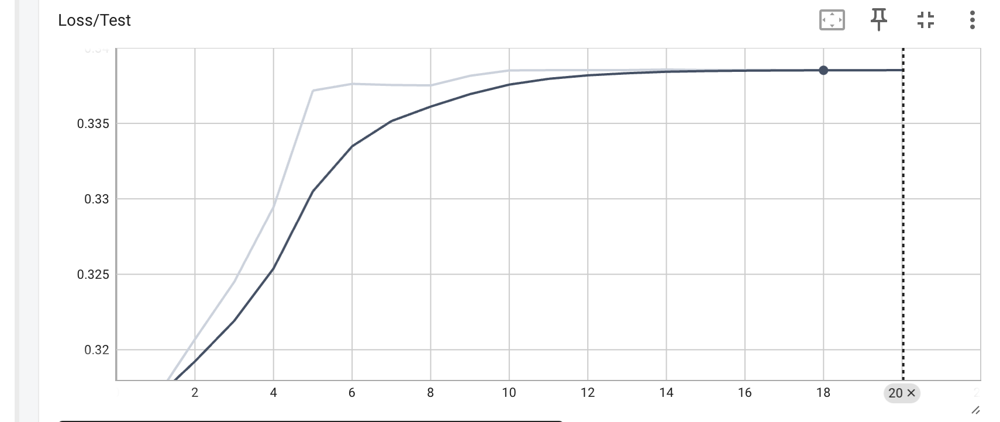
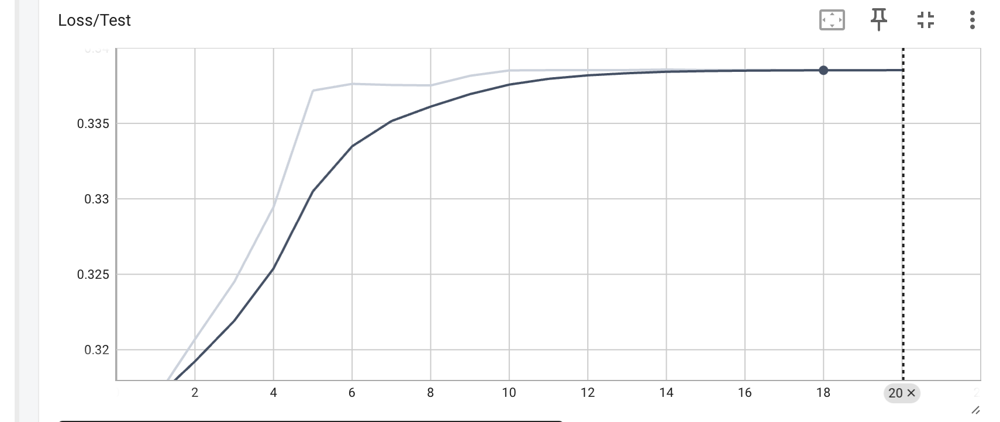

Multimodal Sentiment Analysis to Support Emotional Intelligence & Wellbeing
User Research
- Developed Full Model Class
- Co-developed Architecture
- Data Processing
Overview
FusionFeel is an attention-based multimodal sentiment analysis model that classifies images and captions as expressing either positive or negative sentiment. Built as a final project for CSCI 1430 (Computer Vision), FusionFeel achieved competitive 94.5% accuracy using only 17,000 data points—nearly half the size of the training set used in prior state-of-the-art approaches.
Problem
How can we accurately and efficiently classify sentiment in images and captions, especially in ambiguous or noisy data, like user-generated content from platforms such as Flickr?
Challenge
Noisy Data
Gibberish captions and hashtags like added noise to data
Computational Intensity
Image processing is computationally intense
Ambiguous Categories
Categories like “cloud” and “glass” complicate ground-truth labels
Research & Insights
Research
We reviewed two main sources:
- The MASAD dataset creators, who used a multi-layer transformer with image-text-aspect interaction.
- Huidong et al., whose CMA-CLIP model inspired our pipeline by incorporating CLIP with transformer attention and keyless fusion.
Insights
- Multimodal sentiment analysis benefits from fine-grained, cross-modal attention.
- Noise in user-submitted captions required rigorous preprocessing to ensure input consistency.
- To manage computational intensity of token-level CLIP embeddings, we asked, "Can we compute embeddings at the sentence/image level?"
Solution
We developed a robust, multimodal pipeline that achieves near state-of-the-art accuracy using less than half the data of comparable approaches.
Results
94.5% Accuracy
94.5% test accuracy, compared to 95.6% with full 38k dataset.
Reduced Traning Data
Our approach requires less compute–trained on 50% of data.
Strong Generalization
Our approach generalizes well across 43 diverse aspect categories.
 

Model Pipeline
Data Preprocessing
- Cleaned and normalized images and captions, removing irrelevant tokens (e.g. hashtags) as needed.
- Applied random tranformations to images to improve generalization.
| Caption After Preprocessing | Caption Before Preprocessing |
| and then starts to cry . . . . | and then starts to cry . . . .###http://farm1.static.flickr.com/140/326606874_38f9a12477.jpg###baby<tag>babies<tag>cutebaby<tag>cutebabies<tag>infant<tag>infants<tag>cryingbaby |
Embedding Exraction with CLIP
Converted image-caption pairs into 512-dimensional vectors in a shared feature space.
Cross-Modal Attention
Applied a transformer encoder to contextualize embeddings.
Introduced a keyless attention module to dynamically weight image vs. text contributions.
Classification Head
Passed fused embeddings through a 3-layer neural classifier to predict binary sentiment.
Used Binary Cross-Entropy with Logits Loss and AdamW optimizer for training.
Impact
Training Data Efficiency
Our innput-level embeddings are a novel contribution that advance multi-modal research, offering salient compute gains as multimodal AI tends to be computationally intense
Scalable Emotion-Aware Access
Our efficient approach lowers the barrier to entry for emotion-aware AI, thereby improving scalability
Multimodal AI Innovation
We validate insights on the benefits of cross-modal attention, particularly in noisy-data settings
Accessibility & Inclusion
While not a UI-facing product, FusionFeel contributes to broader accessibility in sentiment AI:
- Efficient training with fewer samples allows teams with limited compute to build effective models.
- Potential applications include mental health (analyzing user sentiment across media), especially valuable for under-resourced populations.
Future Work
Future work can explore extending FusionFeel to multiclass sentiment classification (e.g., joy, anger, sadness) and incorporating temporal context from video or sequential caption data.
Thank You
Thank you to my research collaborators Scott Petersen and Halleluiah Girum, and to our advisor, Shania Guo.